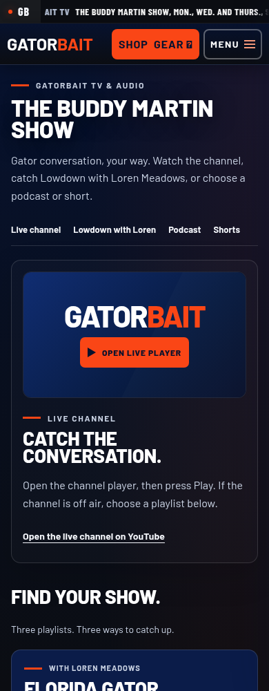
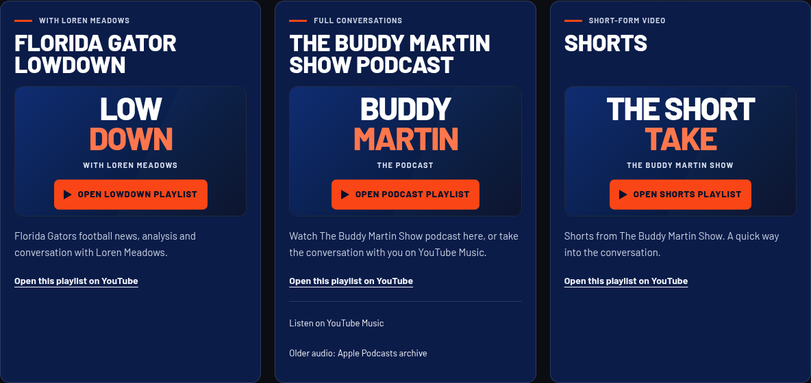

GATORBAIT TV & AUDIO
One live box. Three shows.
Lowdown with Loren Meadows, The Buddy Martin Show Podcast and Shorts each have their own playlist. Choose a player to watch; each has a direct YouTube link.
Open the broadcast page · Evidence and rollback
Phone layout
Separate playlists on desktop
Layout and controls checked at320,390,430,1366 and1920px. Embedded audio/video playback and a physical iPhone remain unverified.